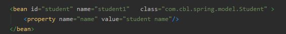
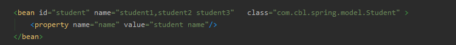

传统的Spring项目, xml 配置bean在代码中是经常遇到, 那么在配置bean的时候,这些属性的作用是什么呢?
虽然说现在boot项目兴起,基于xml配置的少了很多, 但是如果能够了解这些标签的作用对于我们基于注解的配置也有大有益处的.
首先附上测试部分涉及到的类的代码:@Data
public class Student {
private int age;
private String name = "test" ;
private int sex;
}
1. id:Bean的唯一标识名。它必须是合法的XMLID，在整个XML文档中唯一。

2. name:用来为id创建一个或多个别名。它可以是任意的字母符合。多个别名之间用逗号, 分号 或者空格。
其中bean标签解析源码部分处理代码如下:
public BeanDefinitionHolder parseBeanDefinitionElement(Element ele, @Nullable BeanDefinition containingBean) {
String id = ele.getAttribute(ID_ATTRIBUTE);
String nameAttr = ele.getAttribute(NAME_ATTRIBUTE);
//解析nanme 属性,
// 其中 public static final String MULTI_VALUE_ATTRIBUTE_DELIMITERS = ",; ";
// 我们可以发现name属性的分割符是支持三种的
List<String> aliases = new ArrayList<>();
if (StringUtils.hasLength(nameAttr)) {
// 使用分割符分割为数组, 作为这个bean的别名
String[] nameArr = StringUtils.tokenizeToStringArray(nameAttr, MULTI_VALUE_ATTRIBUTE_DELIMITERS);
aliases.addAll(Arrays.asList(nameArr));
}
String beanName = id;
// 如果id 属性为空,则讲第一个别名作为bean的名称
if (!StringUtils.hasText(beanName) && !aliases.isEmpty()) {
beanName = aliases.remove(0);
if (logger.isTraceEnabled()) {
logger.trace("No XML 'id' specified - using '" + beanName +
"' as bean name and " + aliases + " as aliases");
}
}
if (containingBean == null) {
checkNameUniqueness(beanName, aliases, ele);
}
AbstractBeanDefinition beanDefinition = parseBeanDefinitionElement(ele, beanName, containingBean);
if (beanDefinition != null) {
if (!StringUtils.hasText(beanName)) {
try {
if (containingBean != null) {
beanName = BeanDefinitionReaderUtils.generateBeanName(
beanDefinition, this.readerContext.getRegistry(), true);
}
else {
beanName = this.readerContext.generateBeanName(beanDefinition);
// Register an alias for the plain bean class name, if still possible,
// if the generator returned the class name plus a suffix.
// This is expected for Spring 1.2/2.0 backwards compatibility.
String beanClassName = beanDefinition.getBeanClassName();
if (beanClassName != null &&
beanName.startsWith(beanClassName) && beanName.length() > beanClassName.length() &&
!this.readerContext.getRegistry().isBeanNameInUse(beanClassName)) {
aliases.add(beanClassName);
}
}
if (logger.isTraceEnabled()) {
logger.trace("Neither XML 'id' nor 'name' specified - " +
"using generated bean name [" + beanName + "]");
}
}
catch (Exception ex) {
error(ex.getMessage(), ele);
return null;
}
}
String[] aliasesArray = StringUtils.toStringArray(aliases);
return new BeanDefinitionHolder(beanDefinition, beanName, aliasesArray);
}
return null;
}
3. class:用来定义类的全限定名（包名＋类名）。用来指定我们要实例化的类的全限定名
4. parent:子类Bean定义它所引用它的父类Bean。子类Bean会继承父类Bean的所有属性，子类Bean也可以覆盖父类Bean的属性。
此时父类通过property 属性只能初始化子类同有的属性
5. abstract（默认为”false”）：用来定义Bean是否为抽象Bean。它表示这个Bean将不会被实例化，一般用于父类Bean，因为父类Bean主要是供子类Bean继承使用。
<bean id="parent" class="com.cbl.spring.model.Parent" abstract="true">
<property name="username" value="parent name"/>
<!-- <property name="parent" value="parent "/>-->
</bean>
// 这里abstract设置为了 true ,这个parentbean不会被实例化, 一下代码会报错Parent parent = applicationContext.getBean(Parent.class);
属性解析部分源代码:public AbstractBeanDefinition parseBeanDefinitionAttributes(Element ele, String beanName,
@Nullable BeanDefinition containingBean, AbstractBeanDefinition bd) {
// singleton 属性新版本不再有起任何作用, 1.x 的老版本中有使用到, 新版本使用scope 属性
if (ele.hasAttribute(SINGLETON_ATTRIBUTE)) {
error("Old 1.x 'singleton' attribute in use - upgrade to 'scope' declaration", ele);
}
else if (ele.hasAttribute(SCOPE_ATTRIBUTE)) {
bd.setScope(ele.getAttribute(SCOPE_ATTRIBUTE));
}
else if (containingBean != null) {
// Take default from containing bean in case of an inner bean definition.
bd.setScope(containingBean.getScope());
}
if (ele.hasAttribute(ABSTRACT_ATTRIBUTE)) {
bd.setAbstract(TRUE_VALUE.equals(ele.getAttribute(ABSTRACT_ATTRIBUTE)));
}
String lazyInit = ele.getAttribute(LAZY_INIT_ATTRIBUTE);
if (DEFAULT_VALUE.equals(lazyInit)) {
lazyInit = this.defaults.getLazyInit();
}
bd.setLazyInit(TRUE_VALUE.equals(lazyInit));
String autowire = ele.getAttribute(AUTOWIRE_ATTRIBUTE);
bd.setAutowireMode(getAutowireMode(autowire));
if (ele.hasAttribute(DEPENDS_ON_ATTRIBUTE)) {
String dependsOn = ele.getAttribute(DEPENDS_ON_ATTRIBUTE);
bd.setDependsOn(StringUtils.tokenizeToStringArray(dependsOn, MULTI_VALUE_ATTRIBUTE_DELIMITERS));
}
String autowireCandidate = ele.getAttribute(AUTOWIRE_CANDIDATE_ATTRIBUTE);
if ("".equals(autowireCandidate) || DEFAULT_VALUE.equals(autowireCandidate)) {
String candidatePattern = this.defaults.getAutowireCandidates();
if (candidatePattern != null) {
String[] patterns = StringUtils.commaDelimitedListToStringArray(candidatePattern);
bd.setAutowireCandidate(PatternMatchUtils.simpleMatch(patterns, beanName));
}
}
else {
bd.setAutowireCandidate(TRUE_VALUE.equals(autowireCandidate));
}
if (ele.hasAttribute(PRIMARY_ATTRIBUTE)) {
bd.setPrimary(TRUE_VALUE.equals(ele.getAttribute(PRIMARY_ATTRIBUTE)));
}
if (ele.hasAttribute(INIT_METHOD_ATTRIBUTE)) {
String initMethodName = ele.getAttribute(INIT_METHOD_ATTRIBUTE);
bd.setInitMethodName(initMethodName);
}
else if (this.defaults.getInitMethod() != null) {
bd.setInitMethodName(this.defaults.getInitMethod());
bd.setEnforceInitMethod(false);
}
if (ele.hasAttribute(DESTROY_METHOD_ATTRIBUTE)) {
String destroyMethodName = ele.getAttribute(DESTROY_METHOD_ATTRIBUTE);
bd.setDestroyMethodName(destroyMethodName);
}
else if (this.defaults.getDestroyMethod() != null) {
bd.setDestroyMethodName(this.defaults.getDestroyMethod());
bd.setEnforceDestroyMethod(false);
}
if (ele.hasAttribute(FACTORY_METHOD_ATTRIBUTE)) {
bd.setFactoryMethodName(ele.getAttribute(FACTORY_METHOD_ATTRIBUTE));
}
if (ele.hasAttribute(FACTORY_BEAN_ATTRIBUTE)) {
bd.setFactoryBeanName(ele.getAttribute(FACTORY_BEAN_ATTRIBUTE));
}
return bd;
}//beanDifinition 的部分属性默认值定义public abstract class AbstractBeanDefinition extends BeanMetadataAttributeAccessor
implements BeanDefinition, Cloneable {
/**
* Constant for the default scope name: {@code ""}, equivalent to singleton
* status unless overridden from a parent bean definition (if applicable).
*/
// 默认值是空,等同于singleton ,除非被父类给覆盖,也就是说默认值时 singleton
public static final String SCOPE_DEFAULT = "";
/**
* Constant that indicates no autowiring at all.
* @see #setAutowireMode
*/
public static final int AUTOWIRE_NO = AutowireCapableBeanFactory.AUTOWIRE_NO;
/**
* Constant that indicates autowiring bean properties by name.
* @see #setAutowireMode
*/
public static final int AUTOWIRE_BY_NAME = AutowireCapableBeanFactory.AUTOWIRE_BY_NAME;
/**
* Constant that indicates autowiring bean properties by type.
* @see #setAutowireMode
*/
public static final int AUTOWIRE_BY_TYPE = AutowireCapableBeanFactory.AUTOWIRE_BY_TYPE;
/**
* Constant that indicates autowiring a constructor.
* @see #setAutowireMode
*/
public static final int AUTOWIRE_CONSTRUCTOR = AutowireCapableBeanFactory.AUTOWIRE_CONSTRUCTOR;
/**
* Constant that indicates determining an appropriate autowire strategy
* through introspection of the bean class.
* @see #setAutowireMode
* @deprecated as of Spring 3.0: If you are using mixed autowiring strategies,
* use annotation-based autowiring for clearer demarcation of autowiring needs.
*/
@Deprecated
public static final int AUTOWIRE_AUTODETECT = AutowireCapableBeanFactory.AUTOWIRE_AUTODETECT;
/**
* Constant that indicates no dependency check at all.
* @see #setDependencyCheck
*/
public static final int DEPENDENCY_CHECK_NONE = 0;
/**
* Constant that indicates dependency checking for object references.
* @see #setDependencyCheck
*/
public static final int DEPENDENCY_CHECK_OBJECTS = 1;
/**
* Constant that indicates dependency checking for "simple" properties.
* @see #setDependencyCheck
* @see org.springframework.beans.BeanUtils#isSimpleProperty
*/
public static final int DEPENDENCY_CHECK_SIMPLE = 2;
/**
* Constant that indicates dependency checking for all properties
* (object references as well as "simple" properties).
* @see #setDependencyCheck
*/
public static final int DEPENDENCY_CHECK_ALL = 3;
/**
* Constant that indicates the container should attempt to infer the
* {@link #setDestroyMethodName destroy method name} for a bean as opposed to
* explicit specification of a method name. The value {@value} is specifically
* designed to include characters otherwise illegal in a method name, ensuring
* no possibility of collisions with legitimately named methods having the same
* name.
* <p>Currently, the method names detected during destroy method inference
* are "close" and "shutdown", if present on the specific bean class.
*/
public static final String INFER_METHOD = "(inferred)";
@Nullable
private volatile Object beanClass;
@Nullable
private String scope = SCOPE_DEFAULT;
private boolean abstractFlag = false;
// 懒加载的默认值时false
private boolean lazyInit = false;
private int autowireMode = AUTOWIRE_NO;
private int dependencyCheck = DEPENDENCY_CHECK_NONE;
@Nullable
private String[] dependsOn;
private boolean autowireCandidate = true;
private boolean primary = false;
private final Map<String, AutowireCandidateQualifier> qualifiers = new LinkedHashMap<>();
@Nullable
private Supplier<?> instanceSupplier;
private boolean nonPublicAccessAllowed = true;
private boolean lenientConstructorResolution = true;
@Nullable
private String factoryBeanName;
@Nullable
private String factoryMethodName;
@Nullable
private ConstructorArgumentValues constructorArgumentValues;
@Nullable
private MutablePropertyValues propertyValues;
@Nullable
private MethodOverrides methodOverrides;
@Nullable
private String initMethodName;
@Nullable
private String destroyMethodName;
private boolean enforceInitMethod = true;
private boolean enforceDestroyMethod = true;
private boolean synthetic = false;
}
6. singleton（默认为“true”）：定义Bean是否是Singleton（单例）。singleton 属性新版本不再有起任何作用, 1.x 的老版本中有使用到, 新版本使用scope 属性
7.lazy-init（默认为“false”）：用来定义这个Bean是否实现懒初始化。如果为“false”，它将在BeanFactory启动时初始化所有的SingletonBean。反之，如果为“true”,它只在Bean请求时才开始创建SingletonBean。
默认创建的beandefinition 对象是 GenericBeanDefinition, 而 GenericBeanDefinition 继承自 AbstractBeanDefinition ,那么我们的默认的一些属性必然就使用的这两个类中提供的默认值,从上面的部分成员变量的属性值可以看出,默认值为false
8、autowire（自动装配，默认为“default”）：它定义了Bean的自动装载方式。
8.1、“no”:不使用自动装配功能。
8.2、“byName”:通过Bean的属性名实现自动装配。
8.3、“byType”:通过Bean的类型实现自动装配。
8.4、“constructor”:类似于byType，但它是用于构造函数的参数的自动组装。
8.5、“autodetect”:通过Bean类的反省机制（introspection）决定是使用“constructor” 还是使用“byType”。
9、dependency-check（依赖检查，默认为“default”）：它用来确保Bean组件通过JavaBean描述的所以依赖关系都得到满足。在与自动装配功能一起使用时，它特别有用。
9.1、none：不进行依赖检查。
9.2、objects：只做对象间依赖的检查。
9.3、simple：只做原始类型和String类型依赖的检查
9.4、all：对所有类型的依赖进行检查。它包括了前面的objects和simple。
10、depends-on（依赖对象）：这个Bean在初始化时依赖的对象，这个对象会在这个Bean初始化之前创建。
11、init-method:用来定义Bean的初始化方法，它会在Bean组装之后调用。它必须是一个无参数的方法。
12、destroy-method：用来定义Bean的销毁方法，它在BeanFactory关闭时调用。同样，它也必须是一个无参数的方法。它只能应用于singletonBean。
13、factory-method：定义创建该Bean对象的工厂方法。它用于下面的“factory-bean”，表示这个Bean是通过工厂方法创建。此时，“class”属性失效。
14、factory-bean:定义创建该Bean对象的工厂类。如果使用了“factory-bean”则“class”属性失效。
15、autowire-candidate：采用xml格式配置bean时，将<bean/>元素的autowire-candidate属性设置为false，这样容器在查找自动装配对象时，将不考虑该bean，即它不会被考虑作为其它bean自动装配的候选者，但是该bean本身还是可以使用自动装配来注入其它bean的。